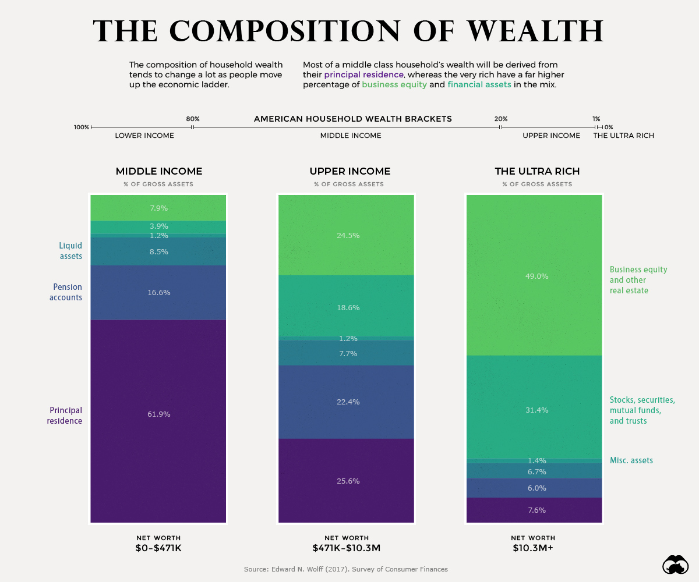
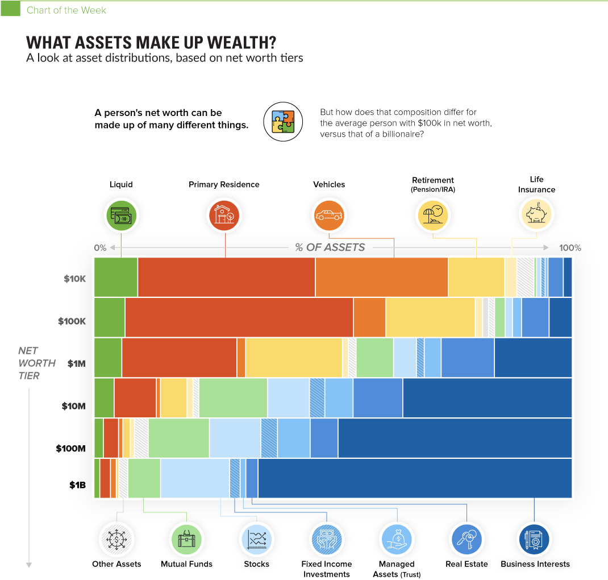

Does a stock market crash take real estate down with it?
S&P 500, Oct 6 record close to Nov 19
Not a crash yet. A crash is 20%+. The question is what happens to houses if it gets there.
Source: S&P Dow Jones Indices via FRED SP500, daily close, Jan 2 to Nov 19, 2026. Arrow keys or swipe to move.
FRED SP500, pulled Nov 23, 2026. Record close 7,818.93 (Oct 6); 7,175.83 (Nov 19).
Homes fell after three of six stock drops. Rates or credit drove each one.
Down: Toronto 1990 (rates 13%), US 2008 (housing was the problem), Canada 2022 (rates +4 pts).
Up: 1987, 2000-02, 2020. Mortgage rates fell, or rose less than half a point.
Stocks are the smoke alarm. Rates are the fire.
Source: S&P/Case-Shiller US National (FRED CSUSHPINSA); BIS Canada residential property prices (FRED QCAN628BIS); Toronto new housing price index (StatCan 18-10-0205 (Toronto new housing price index)) for 1990. Equity peak months from OECD share price index (FRED SPASTT01USM661N).
Home price change from the equity peak month to 24 months later. Nominal. Equity peaks: Aug 1987, Jun 1990, Aug 2000, Oct 2007, Jan 2020, Dec 2021.
This time rates are rising into the dip, not falling.
BoC overnight target after the Oct 29 hike (from 2.25%)
GoC 5-yr yield 3.53% Nov 19, up from 3.00% Jan 2. US 30-yr fixed 7.28%. Fed funds 3.88% since Sep 17.
Source: Freddie Mac PMMS via FRED MORTGAGE30US; Bank of Canada Valet V80691335 (5-yr conventional posted); Bank of Canada Valet V39079 (overnight target); FRED FEDFUNDS; Bank of Canada Valet BD.CDN.5YR.DQ.YLD.
Monthly averages, Jan 2019 to Nov 2026 (Nov partial). Pulled Nov 23, 2026.
US households have never held more of their wealth in stocks.
of US household assets in stocks and mutual funds, Q2 2026
Real estate: 24.2%. That is $64.6T in stocks vs $49.8T in homes. Excludes stocks held inside 401(k)s and other DC plans.
Source: Federal Reserve, Distributional Financial Accounts, Q3 1989 to Q2 2026 (released Sep 2026).
Corporate equities and mutual fund shares, and owner-occupied real estate, as % of total household assets, all wealth groups.
Canadians hold a record share in stocks. Houses still lead, but less.
of Canadian household assets in listed stocks, funds and foreign equity, Q2 2026
Real estate (dwellings + land): 37.9%, down from 46.0% in Q1 2022. Including private business shares, equity is 28.6%.
Source: Statistics Canada, table 36-10-0580-01, households sector, market value, Q1 1990 to Q2 2026.
Listed shares + mutual fund units + foreign equity; dwellings + land underlying dwellings; each as % of total household assets.
$1.24 in financial assets per $1 of real assets: highest since 2000.
financial assets per $1.00 of non-financial assets (homes, land, durables), Q2 2026
Last higher: Q4 2000 ($1.29). Low: Q1 2022 ($0.91). Net worth hit $19.1T, +2.9% in the quarter.
Source: StatCan, The Daily, Sep 11, 2026; rebuilt from Statistics Canada, table 36-10-0580-01, households, market value. Chart pointed out by Dan via a Zamani Real Estate reel; data sourced from StatCan only.
Household total financial assets / (total assets less financial assets), quarterly, Q1 1990 to Q2 2026.
The top 1% are a stock portfolio. The bottom half are a house.
Top 1%: 53.5% of assets in stocks, 10.8% in their home.
Bottom 50%: 3.6% stocks, 46.9% home.
A crash hits the people least likely to need to sell a house.
Source: Federal Reserve, Distributional Financial Accounts, Q2 2026.
Share of each group's total assets. Pensions = DB + DC entitlements. Other = durables, deposits, bonds, other.
The top 1% own half of all stocks. The 50-90th own half the homes.
of household stocks and mutual funds held by the top 1%
The 50th to 90th percentile own 46.6% of household real estate and only 11.4% of stocks.
Source: Federal Reserve, Distributional Financial Accounts, Q2 2026.
Share of total household holdings of each asset, by wealth percentile group.
For most Canadians, wealth is the house. Only the top fifth is different.
Real estate share of assets: 53.6% to 59.1% for the bottom three wealth quintiles. 34.3% for the top quintile.
Data gap: StatCan's distribution table does not split out stocks. "Other financial" holds deposits, stocks, funds and bonds.
Source: Statistics Canada, table 36-10-0660-01, Distributions of household economic accounts, Q4 2025 (latest).
Share of each wealth quintile's total assets.
The top fifth holds 69% of financial assets but half the real assets.
of all household financial assets held by the top wealth quintile
Top quintile: 49.7% of non-financial assets. In StatCan's words, "market gains are not equally shared."
Source: Statistics Canada, table 36-10-0660-01, Q4 2025; quoted in StatCan, The Daily, Sep 11, 2026.
Share of total household financial and non-financial assets held by each wealth quintile.
The middle class is 62% house. The ultra rich are 8% house.

Middle income: 61.9% principal residence.
Ultra rich: 7.6% house, 31.4% stocks, 49% business equity and other real estate.
2016 data. The Fed DFA 2026 numbers (slide 7) show the same split, with even more stock at the top.
Source: Visual Capitalist, "The Composition of Wealth"; data Edward N. Wolff (2017), Survey of Consumer Finances 2016, US households, % of gross assets. Original chart shown as published.
Up to $1M net worth, the house is the biggest asset.

Primary residence is the biggest asset for every tier up to $1M.
At $10M+, business interests and stocks take over.
2016 SCF. Pair with the Q2 2026 DFA mix on slide 7.
Source: Visual Capitalist, "What Assets Make Up Wealth?"; data Federal Reserve Survey of Consumer Finances (2016), US, asset mix by net worth tier ($10K to $1B, log10 groups). Original chart, cropped to the exhibit; the full image is in this folder.
A dollar of house wealth moves spending four times more than stocks.
spent per $1 of real estate wealth, vs 1.18¢ per $1 of stock wealth (US estimates)
CIBC estimates the Canadian housing wealth effect takes about 1.0 pt off 2026 consumption growth.
Source: CIBC Economics, In Focus, Jul 23, 2026, citing Beach et al. (2025), Federal Reserve. US estimates of the marginal propensity to consume.
Cents of consumer spending per $1 change in wealth, by asset type. "Other" net assets 2.9¢.
1987: stocks fell 27%. Home prices kept climbing.
S&P monthly average -26.8%, Aug to Dec 1987.
24 months after the peak: US homes +13.4%, Toronto new homes +41.6%.
The Fed raised rates in 1988 and housing still went up.
Source: OECD share prices via FRED SPASTT01USM661N and FRED SPASTT01CAM661N; FRED CSUSHPINSA; StatCan 18-10-0205 (Toronto new housing price index).
Indexed, equity peak month (Aug 1987) = 100, 24 months. Monthly averages understate the Oct 19 one-day drop.
Toronto's 1990 bust was a rate story. The TSX barely moved.
TRREB average price, 1989 ($273,698) to 1996 ($198,317)
Bank Rate averaged 13.04% in 1990. The 5-yr posted rate hit 14.25%.
Source: TRREB historic statistics (annual average price, all property types; boundaries changed over time); Bank Rate Bank of Canada Valet V122530; 5-yr posted Bank of Canada Valet V80691335; TSX OECD index FRED SPASTT01CAM661N.
Annual averages, 1985 to 2000. TSX indexed, 1989 = 100.
Dot-com: the TSX lost 42%, rates fell, and houses rose.
TSX monthly average -41.8%, S&P -29.1% (Aug 2000 to Sep 2002).
Fed cut 2.85 pts in 12 months.
24 months on: US homes +17.1%, Canada +14.9%.
Source: FRED SPASTT01USM661N, FRED SPASTT01CAM661N, FRED CSUSHPINSA, FRED QCAN628BIS, FRED FEDFUNDS.
Indexed, Aug 2000 = 100, 24 months. Canada (BIS) is quarterly. Fed funds on right axis.
In 2008 housing broke first. US prices peaked 15 months before stocks.
US home prices peaked Jul 2006. Stocks peaked Oct 2007.
24 months after the stock peak: US homes -16.3%. Canada +1.6%.
The crash came from mortgages. Stocks followed housing, not the other way.
Source: FRED CSUSHPINSA, FRED SPASTT01USM661N, FRED QCAN628BIS.
Indexed, Jan 2005 = 100, monthly to Dec 2010.
COVID: a 34% crash, rates to zero, then a housing boom.
S&P 500 close, Feb 19 to Mar 23, 2020
24 months on: US homes +32.7%, Canada +36.4%. US 30-yr fell 0.9 pts in 12 months.
Source: FRED SP500; FRED SPASTT01USM661N, FRED SPASTT01CAM661N, FRED CSUSHPINSA, FRED QCAN628BIS, FRED MORTGAGE30US.
Indexed, Jan 2020 = 100, 24 months. Canada (BIS) quarterly. US 30-yr mortgage rate on right axis.
2022: rates hit stocks and Canadian housing together.
S&P close -25.4%, Jan 3 to Oct 12, 2022.
In 12 months: Fed funds +4.0 pts, US 30-yr +3.3 pts.
Canada homes -4.2% in 24 months (BIS). TRREB average: $1,193,766 (2022) to $1,067,707 (2025).
Source: FRED SP500; FRED SPASTT01USM661N, FRED SPASTT01CAM661N, FRED CSUSHPINSA, FRED QCAN628BIS, FRED FEDFUNDS; TRREB historic statistics.
Indexed, Dec 2021 = 100, 24 months. Canada (BIS) quarterly. Fed funds on right axis.
Bigger stock drops did not mean bigger housing drops.
The question: if the S&P falls 20% from its October high by mid-2027, are GTA prices lower 12 months later?
Nick: yes, lower. Dan: no, rates decide.
Six data points. A pattern, not a model.
Source: FRED SPASTT01USM661N; FRED CSUSHPINSA; FRED QCAN628BIS; Toronto 1990 from StatCan 18-10-0205 (Toronto new housing price index).
x: S&P peak-to-trough, monthly average index. y: home price change 24 months after the equity peak.
Watch the 5-year bond, not the S&P.
Government of Canada 5-yr yield, Nov 19, 2026
Up from 3.00% on Jan 2. Low 2.67% Feb 27, high 3.69% Sep 23. Canadian fixed mortgage rates follow this line.
Source: Bank of Canada Valet BD.CDN.5YR.DQ.YLD and BD.CDN.10YR.DQ.YLD, daily, 2026.
Benchmark bond yields, Jan 2 to Nov 19, 2026. Pulled Nov 23, 2026.